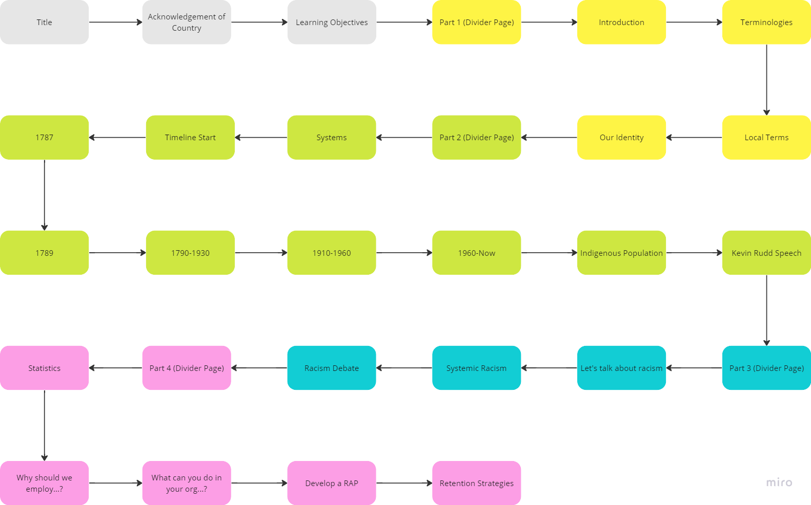

My Role
I was assigned this project to create a piece of e-Learning and create a fresh perspective/outlook on an older PowerPoint.
I was acutely aware of the importance of accurate representation and cultural authenticity. To ensure a respectful and genuine portrayal of the topic, I actively sought the guidance and collaboration of a subject matter expert who is an Aboriginal Australian. This collaborative engagement was foundational in shaping the content and approach of the e-Learning module.

Storytelling through imagery and motion effects
This e-Learning module emphasises a story-driven approach, leveraging animations and moving visual effects to engage and immerse learners. The stories shared within this module highlight the historical context, cultural practices, and the ongoing journey of Aboriginal Australians, providing a platform for empathy, reflection, and learning.
I thought of ways to animate and showcase what the sophisticated systems that the Aboriginal Australians had would look like. I created an isometric illustration of land, water and the skies to portray this.
Inspiring reconciliation
By sharing personal stories, cultural insights, and showcasing the impact of historical events, the module seeks to sensitise learners and ignite a desire for positive change.
Through this immersive approach, the module aims to empower learners to take meaningful steps towards reconciliation and inclusion in today's society.
A brief look into their history
Creating a dynamic timeline that emphasises Aboriginal Australian history, exploring the history and experiences of Aboriginal Australians, aiming to raise awareness and foster a deeper understanding of their culture, struggles, and aspirations.